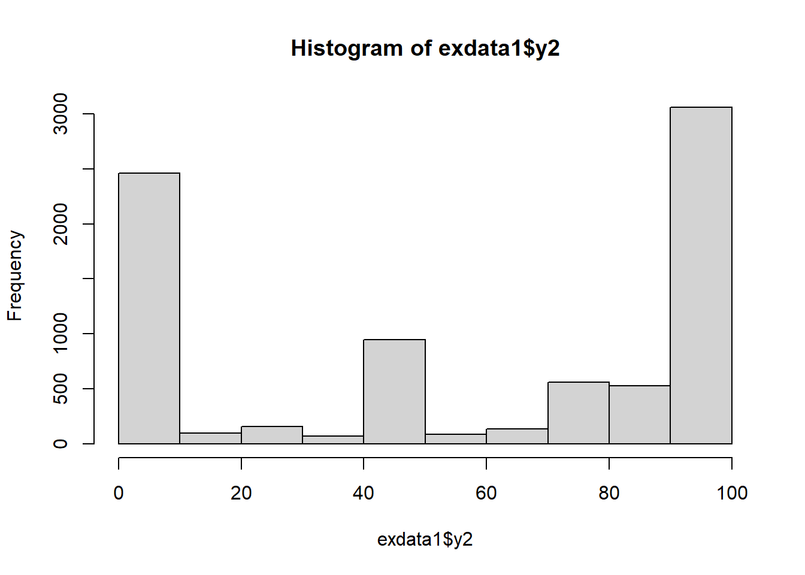

test empirical data
NLSY97
NLSY97 respondents in select years shared their beliefs about events that might occur in their future. In addition, responding parents in round 1 provided corresponding expectations about the youth respondent’s future, so researchers may be able to compare parent and child perceptions for that round. Description of variables
Specifically, “Arrested (whether rightly or wrongly)” exceptions has the following distribution.
Also, other expectations show some skewed distribution as well (like for “Dead from any cause (e.g., crime, illness, accident)” expectation, it is very positively skewed)
- 1997
- 1998

- 1999

- 2000
Unconditional LGM
model = "
yI =~ 1*y1 + 1*y2 + 1*y3 + 1*y4
yS =~ 0*y1 + 1*y2 + 2*y3 + 3*y4
"- LGM with typical MLE
fit <- lavaan::growth(model = model, exdata1)
#
#
summary(fit, fit.measures = T, standardized = T)lavaan 0.6.16 ended normally after 128 iterations
Estimator ML
Optimization method NLMINB
Number of model parameters 9
Used Total
Number of observations 6806 8984
Model Test User Model:
Test statistic 63.827
Degrees of freedom 5
P-value (Chi-square) 0.000
Model Test Baseline Model:
Test statistic 3005.929
Degrees of freedom 6
P-value 0.000
User Model versus Baseline Model:
Comparative Fit Index (CFI) 0.980
Tucker-Lewis Index (TLI) 0.976
Loglikelihood and Information Criteria:
Loglikelihood user model (H0) -138418.492
Loglikelihood unrestricted model (H1) -138386.578
Akaike (AIC) 276854.983
Bayesian (BIC) 276916.413
Sample-size adjusted Bayesian (SABIC) 276887.813
Root Mean Square Error of Approximation:
RMSEA 0.042
90 Percent confidence interval - lower 0.033
90 Percent confidence interval - upper 0.051
P-value H_0: RMSEA <= 0.050 0.929
P-value H_0: RMSEA >= 0.080 0.000
Standardized Root Mean Square Residual:
SRMR 0.022
Parameter Estimates:
Standard errors Standard
Information Expected
Information saturated (h1) model Structured
Latent Variables:
Estimate Std.Err z-value P(>|z|) Std.lv Std.all
yI =~
y1 1.000 21.931 0.538
y2 1.000 21.931 0.526
y3 1.000 21.931 0.539
y4 1.000 21.931 0.524
yS =~
y1 0.000 0.000 0.000
y2 1.000 7.589 0.182
y3 2.000 15.178 0.373
y4 3.000 22.767 0.544
Covariances:
Estimate Std.Err z-value P(>|z|) Std.lv Std.all
yI ~~
yS -30.122 11.386 -2.645 0.008 -0.181 -0.181
Intercepts:
Estimate Std.Err z-value P(>|z|) Std.lv Std.all
.y1 0.000 0.000 0.000
.y2 0.000 0.000 0.000
.y3 0.000 0.000 0.000
.y4 0.000 0.000 0.000
yI 58.727 0.438 134.022 0.000 2.678 2.678
yS 0.645 0.199 3.234 0.001 0.085 0.085
Variances:
Estimate Std.Err z-value P(>|z|) Std.lv Std.all
.y1 1179.947 33.103 35.644 0.000 1179.947 0.710
.y2 1257.766 25.459 49.404 0.000 1257.766 0.724
.y3 1064.385 22.695 46.899 0.000 1064.385 0.643
.y4 935.539 30.590 30.583 0.000 935.539 0.533
yI 480.972 28.239 17.032 0.000 1.000 1.000
yS 57.593 6.484 8.883 0.000 1.000 1.000- LGM with GBIT
cfit <- clavaan::cgrowth(model = model, exdata1, bounds =
list(c(0, 100), c(0, 100),c(0, 100),c(0, 100),
c(0,100),c(0,100),c(0,100),c(0,100),
c(-Inf,Inf)))
summary(cfit, fit.measures = T, standardized = T)lavaan 0.6.16 ended normally after 97 iterations
Estimator GLS
Optimization method NLMINB
Number of model parameters 9
Number of observations 8984
Model Test User Model:
Test statistic 138.125
Degrees of freedom 5
P-value (Chi-square) 0.000
Model Test Baseline Model:
Test statistic 2156.786
Degrees of freedom 6
P-value 0.000
User Model versus Baseline Model:
Comparative Fit Index (CFI) 0.938
Tucker-Lewis Index (TLI) 0.926
Root Mean Square Error of Approximation:
RMSEA 0.054
90 Percent confidence interval - lower 0.047
90 Percent confidence interval - upper 0.062
P-value H_0: RMSEA <= 0.050 0.164
P-value H_0: RMSEA >= 0.080 0.000
Standardized Root Mean Square Residual:
SRMR 0.032
Parameter Estimates:
Standard errors Standard
Information Expected
Information saturated (h1) model Structured
Latent Variables:
Estimate Std.Err z-value P(>|z|) Std.lv Std.all
yI =~
y1 1.000 39.585 0.571
y2 1.000 39.585 0.505
y3 1.000 39.585 0.525
y4 1.000 39.585 0.476
yS =~
y1 0.000 0.000 0.000
y2 1.000 16.545 0.211
y3 2.000 33.090 0.439
y4 3.000 49.636 0.596
Covariances:
Estimate Std.Err z-value P(>|z|) Std.lv Std.all
yI ~~
yS -60.777 32.342 -1.879 0.060 -0.093 -0.093
Intercepts:
Estimate Std.Err z-value P(>|z|) Std.lv Std.all
.y1 0.000 0.000 0.000
.y2 0.000 0.000 0.000
.y3 0.000 0.000 0.000
.y4 0.000 0.000 0.000
yI 60.683 0.667 90.990 0.000 1.533 1.533
yS 1.863 0.322 5.777 0.000 0.113 0.113
Variances:
Estimate Std.Err z-value P(>|z|) Std.lv Std.all
.y1 3241.217 88.529 36.612 0.000 3241.217 0.674
.y2 4429.060 76.885 57.607 0.000 4429.060 0.720
.y3 3263.097 63.672 51.249 0.000 3263.097 0.574
.y4 3259.868 95.019 34.307 0.000 3259.868 0.471
yI 1566.959 79.982 19.591 0.000 1.000 1.000
yS 273.744 19.072 14.353 0.000 1.000 1.000Conditional LGM
model = "
yI =~ 1*y1 + 1*y2 + 1*y3 + 1*y4
yS =~ 0*y1 + 1*y2 + 2*y3 + 3*y4
yI ~ gen;
yS ~ gen;
gen ~ 1;
"- LGM with typical MLE
fit <- lavaan::growth(model = model, exdata1)
summary(fit, fit.measures = T, standardized = T)lavaan 0.6.16 ended normally after 136 iterations
Estimator ML
Optimization method NLMINB
Number of model parameters 13
Used Total
Number of observations 6806 8984
Model Test User Model:
Test statistic 67.612
Degrees of freedom 7
P-value (Chi-square) 0.000
Model Test Baseline Model:
Test statistic 3014.446
Degrees of freedom 10
P-value 0.000
User Model versus Baseline Model:
Comparative Fit Index (CFI) 0.980
Tucker-Lewis Index (TLI) 0.971
Loglikelihood and Information Criteria:
Loglikelihood user model (H0) -143355.127
Loglikelihood unrestricted model (H1) -143321.321
Akaike (AIC) 286736.253
Bayesian (BIC) 286824.986
Sample-size adjusted Bayesian (SABIC) 286783.675
Root Mean Square Error of Approximation:
RMSEA 0.036
90 Percent confidence interval - lower 0.028
90 Percent confidence interval - upper 0.044
P-value H_0: RMSEA <= 0.050 0.999
P-value H_0: RMSEA >= 0.080 0.000
Standardized Root Mean Square Residual:
SRMR 0.019
Parameter Estimates:
Standard errors Standard
Information Expected
Information saturated (h1) model Structured
Latent Variables:
Estimate Std.Err z-value P(>|z|) Std.lv Std.all
yI =~
y1 1.000 21.936 0.538
y2 1.000 21.936 0.526
y3 1.000 21.936 0.539
y4 1.000 21.936 0.524
yS =~
y1 0.000 0.000 0.000
y2 1.000 7.591 0.182
y3 2.000 15.183 0.373
y4 3.000 22.774 0.544
Regressions:
Estimate Std.Err z-value P(>|z|) Std.lv Std.all
yI ~
gen -0.084 0.876 -0.096 0.924 -0.004 -0.002
yS ~
gen 0.699 0.399 1.753 0.080 0.092 0.046
Covariances:
Estimate Std.Err z-value P(>|z|) Std.lv Std.all
.yI ~~
.yS -30.196 11.385 -2.652 0.008 -0.182 -0.182
Intercepts:
Estimate Std.Err z-value P(>|z|) Std.lv Std.all
gen 1.493 0.006 246.310 0.000 1.493 2.986
.y1 0.000 0.000 0.000
.y2 0.000 0.000 0.000
.y3 0.000 0.000 0.000
.y4 0.000 0.000 0.000
.yI 58.852 1.380 42.656 0.000 2.683 2.683
.yS -0.398 0.627 -0.635 0.525 -0.052 -0.052
Variances:
Estimate Std.Err z-value P(>|z|) Std.lv Std.all
.y1 1179.511 33.097 35.638 0.000 1179.511 0.710
.y2 1257.739 25.458 49.404 0.000 1257.739 0.724
.y3 1064.574 22.696 46.905 0.000 1064.574 0.643
.y4 935.557 30.584 30.589 0.000 935.557 0.533
gen 0.250 0.004 58.335 0.000 0.250 1.000
.yI 481.175 28.239 17.039 0.000 1.000 1.000
.yS 57.506 6.482 8.872 0.000 0.998 0.998- LGM with GBIT
cfit <- clavaan::cgrowth(model = model, exdata1, bounds =
list(c(0, 100), c(0, 100),c(0, 100),c(0, 100),
c(0,100),c(0,100),c(0,100),c(0,100),
c(-Inf,Inf)))
summary(cfit, fit.measures = T, standardized = T)lavaan 0.6.16 ended normally after 129 iterations
Estimator GLS
Optimization method NLMINB
Number of model parameters 13
Number of observations 8984
Model Test User Model:
Test statistic 140.617
Degrees of freedom 7
P-value (Chi-square) 0.000
Model Test Baseline Model:
Test statistic 2162.362
Degrees of freedom 10
P-value 0.000
User Model versus Baseline Model:
Comparative Fit Index (CFI) 0.938
Tucker-Lewis Index (TLI) 0.911
Root Mean Square Error of Approximation:
RMSEA 0.046
90 Percent confidence interval - lower 0.040
90 Percent confidence interval - upper 0.053
P-value H_0: RMSEA <= 0.050 0.823
P-value H_0: RMSEA >= 0.080 0.000
Standardized Root Mean Square Residual:
SRMR 0.027
Parameter Estimates:
Standard errors Standard
Information Expected
Information saturated (h1) model Structured
Latent Variables:
Estimate Std.Err z-value P(>|z|) Std.lv Std.all
yI =~
y1 1.000 39.604 0.571
y2 1.000 39.604 0.505
y3 1.000 39.604 0.525
y4 1.000 39.604 0.476
yS =~
y1 0.000 0.000 0.000
y2 1.000 16.551 0.211
y3 2.000 33.101 0.439
y4 3.000 49.652 0.597
Regressions:
Estimate Std.Err z-value P(>|z|) Std.lv Std.all
yI ~
gen 0.222 1.335 0.166 0.868 0.006 0.003
yS ~
gen 1.405 0.645 2.178 0.029 0.085 0.042
Covariances:
Estimate Std.Err z-value P(>|z|) Std.lv Std.all
.yI ~~
.yS -61.429 32.341 -1.899 0.058 -0.094 -0.094
Intercepts:
Estimate Std.Err z-value P(>|z|) Std.lv Std.all
gen 1.488 0.005 282.275 0.000 1.488 2.979
.y1 0.000 0.000 0.000
.y2 0.000 0.000 0.000
.y3 0.000 0.000 0.000
.y4 0.000 0.000 0.000
.yI 60.353 2.096 28.792 0.000 1.524 1.524
.yS -0.229 1.013 -0.226 0.821 -0.014 -0.014
Variances:
Estimate Std.Err z-value P(>|z|) Std.lv Std.all
.y1 3238.923 88.517 36.591 0.000 3238.923 0.674
.y2 4426.312 76.864 57.587 0.000 4426.312 0.720
.y3 3263.321 63.664 51.258 0.000 3263.321 0.574
.y4 3260.453 95.005 34.319 0.000 3260.453 0.471
gen 0.250 0.004 66.995 0.000 0.250 1.000
.yI 1568.493 79.974 19.612 0.000 1.000 1.000
.yS 273.428 19.067 14.340 0.000 0.998 0.998